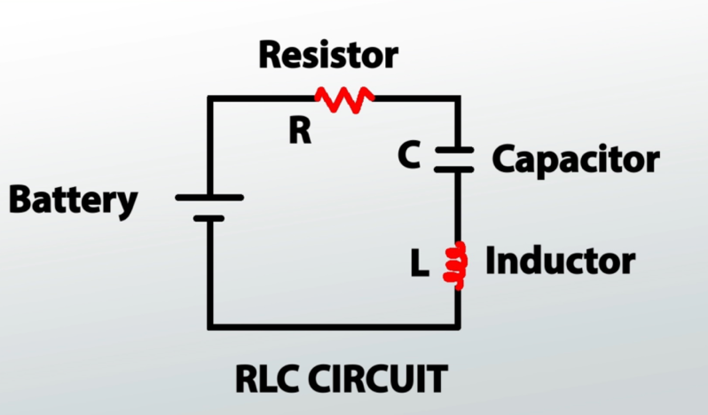

Mathematical Modeling & Derivation
Applying physical laws and calculus to characterize the exchange of energy in an RLC Series Circuit.
1. Circuit Description & Problem Definition
To really understand why electrical devices don’t just jump to action when they are plugged in or turned on, we need to understand what RLC (Resistor, Inductor, Capacitor) circuits are and the mathematics behind them. When we apply KVL (Kirchhoff’s Voltage Law) to a standard series RLC circuit, we uncover a second-order differential equation that forms the basis of all of our analysis in this project.

Figure a: Standard RLC Series Circuit Diagram (Resistor R, Inductor L, Capacitor C in series with Voltage Source V(t))Kirchhoff’s Voltage Law states that the algebraic sum of all voltages around any closed loop in a circuit must equal zero. Applying KVL to our series loop, the sum of the voltage drops across the resistor, inductor, and capacitor must equal the applied voltage source \(F(t)\):
Variable Definitions:
Model Assumptions:
- The resistor only provides linear resistance \(R\), governed by Ohm's Law (\(V_R = R i\)).
- The inductor only provides linear inductance \(L\), governed by Faraday's Law (\(V_L = L \frac{di}{dt}\)).
- The capacitor only stores charge with constant capacitance \(C\), governed by (\(V_C = \frac{q}{C}\)).
- At every instant, the voltage around a closed loop is 0 (KVL applies perfectly).
- The parameter values \(R\), \(L\), and \(C\) are lumped and constant (they do not vary with time or current level).
2. Damping Dynamics
As George Maria Selvam and Vignesh (2018) point out, we can simplify our analysis of the circuit by looking at the interaction of two rival physical characteristics: the damping coefficient (\(\alpha\)) and the natural resonant frequency (\(\omega_0\)).
Damping Coefficient (\(\alpha\))
Determined entirely by the resistor, which actively works to slow the current down and dissipate energy as heat.
Natural Resonant Frequency (\(\omega_0\))
Represents the circuit’s natural desire to oscillate, dictated by the rate at which the inductor and capacitor swap stored energy.
The relationship between \(\alpha\) and \(\omega_0\) determines which of the three response modes the circuit will exhibit when disturbed:
| Damping State | Mathematical Condition | Physical Behavior | Applications |
|---|---|---|---|
| Underdamped | \(\alpha < \omega_0\) (Low R) | Current and charge swing back and forth (oscillate) with decaying amplitude. | Radio tuning, filters, transmitters. |
| Critically Damped | \(\alpha = \omega_0\) (Optimal R) | Returns to equilibrium in the minimum possible time without any oscillations. | Measuring instruments, CD players. |
| Overdamped | \(\alpha > \omega_0\) (High R) | Slowly decays back to equilibrium without any oscillations. | Surge suppressors, protection circuits. |
3. Analytical Solution Attempt
This initial attempt to solve the differential equation was based on the assumption that the voltage source is a direct current source and used initial conditions of \(q(0) = 0\) and \(q'(0) = 0\) (it was assumed that the charge at the moment the circuit was closed is 0). This analytical solution does not contain a general solution for the underdamped case — it contains solutions for when the system is overdamped or critically damped.
Solution
Case 1: General Solution (Symbolic Approach) — Assume Voltage Source is DC
Finding the homogeneous solution — ignoring \(V(t)\):
Dividing through by \(L\):
Let \(q = e^{rt}\) — characteristic equation:
Using the discriminant \(\Delta = b^2 - 4ac\):
1) When \(\Delta > 0\) (real roots, overdamped):
Since \(V_0\) is constant (DC source):
2) When \(\Delta = 0\) (critically damped — repeated roots):
Example — Sample Values for \(R\), \(L\) and \(C\) with Initial Conditions
With \(L = 1\), \(V = 100\), \(C = 0.01\), \(R = 25\):
Homogeneous Solution:
Let \(q = e^{rt}\):
Particular Solution:
Let \(q_p = k\), then \(q_p' = 0\) and \(q_p'' = 0\). Substituting:
Applying Initial Conditions
Using \(q(0) = 0\) and \(q'(0) = 0\):
Differentiating \(q(t)\):
Solving \(A + B = -1\) and \(-20A - 5B = 0\):
∴ The general solution is: